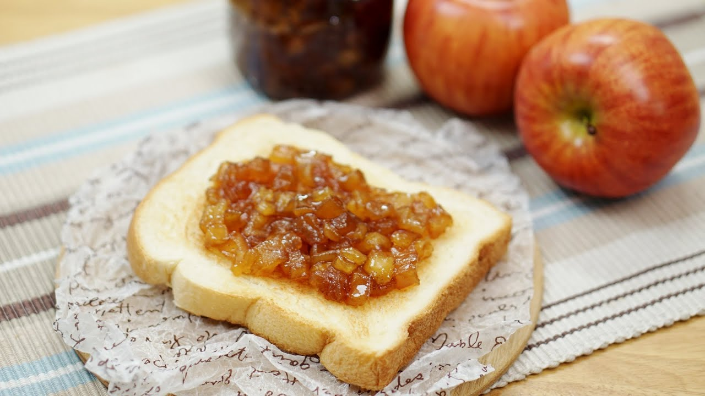

Ingredients
- 5 Apples
- 500g Sugar
- 4 tablespoons Lemon juice
- 1/2 tablespoon Cinnamon powder
Steps
- Sterilize a glass jar by boiling it in water for 3-5 minutes. Let it dry completely.
- Wash the apples thoroughly.
- Remove the seeds and chop the apples into desired sizes.
- In a pot, add 1050g of chopped apples and 500g of sugar. Cover the pot and heat on low for 20 minutes.
- Once the sugar starts to melt, increase to medium heat and stir occasionally to prevent sticking.
- Add 4 tablespoons of lemon juice and 1/2 tablespoon of cinnamon powder. Adjust quantities to taste.
- Cook until the apples reach a jam-like consistency, stirring occasionally (about 35 minutes).
- Once the jam is ready, pour it into the sterilized jar while hot. Seal the jar and let it cool upside down for a vacuum seal.
- Enjoy the apple jam on warm toast or as a sweet treat!